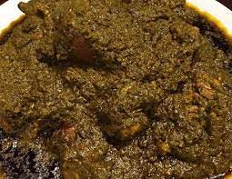

Cassava Leaf

Description
Cassava leaf dish is a traditional African culinary delight that showcases the rich
and diverse flavors of the continent. Made from the tender and nutritious leaves
of the cassava plant, this dish is a staple in many West and Central African
countries. The leaves are meticulously cleaned, pounded, and cooked with an
array of aromatic ingredients such as onions, tomatoes, garlic, and various
spices. Often complemented with protein-rich additions like smoked fish, meat,
or poultry, the dish offers a hearty and savory experience. With its distinctive
taste and smooth, thick texture, cassava leaf dish is a cherished culinary gem
that reflects the cultural heritage and culinary ingenuity of Africa
Ingredients
- Cassava leaves: Fresh or frozen cassava leaves are the main component of the dish.
They can be found in African or specialty grocery stores
- Protein: You can choose from various options such as smoked fish, beef, chicken,
or dried shrimp to add a flavorful protein element to the dish.
- Palm oil: This is a common cooking oil used in many African cuisines and adds a
distinct flavor and color to the dish.
- Aromatics: Onions, garlic, and tomatoes are essential aromatics that provide a
savory base for the dish.
- Seasonings and spices: Common seasonings and spices include stock cubes or bouillon
powder, salt, pepper, and optionally chili peppers or hot sauce for some heat.
- Peanut butter (optional): In some variations of cassava leaf dish, peanut butter
is added to enhance the flavor and add a creamy texture.
- Water or broth: This is used to cook the cassava leaves and
create the desired consistency of the dish.
Steps
- Prepare the cassava leaves: Clean the cassava leaves thoroughly by removing any
tough stems or veins. Rinse them in cold water to eliminate any dirt or impurities.
If using frozen leaves, thaw them according to package instructions.
- Pound or blend the cassava leaves: Traditionally, cassava leaves are pounded using
a mortar and pestle until they become a smooth paste. Alternatively, you can use a
food processor or blender to achieve a similar consistency. Set aside the processed
leaves.
- Cook the protein: If using meat or poultry, cook it separately in a pot until it's
tender and fully cooked. If using smoked fish or dried shrimp, soak them in hot
water to remove excess salt or smoke, and then remove any bones or shells.
- Sauté aromatics: Heat palm oil in a large pot or saucepan over medium heat. Add
finely chopped onions, minced garlic, and diced tomatoes. Sauté until the onions
are translucent and the tomatoes soften.
- Add the cassava leaves: Stir in the processed cassava leaves into the pot with
the aromatics. Mix well to combine the flavors.
- Add protein and seasonings: Add the cooked protein to the pot and stir it into
the cassava leaf mixture. Season with stock cubes or bouillon powder, salt,
pepper, and any desired spices. If using peanut butter, add it at this stage.
- Simmer and cook: Pour enough water or broth into the pot to achieve the desired
consistency of the dish. Bring the mixture to a gentle simmer, cover the pot, and
let it cook for about 1 to 2 hours. Stir occasionally to prevent sticking or burning.
- Adjust the flavors: Taste the dish and adjust the seasonings according to your
preference. You can add more salt, pepper, or spices if needed.
- Serve: Cassava leaf dish is traditionally served with a starch such as rice, fufu,
or pounded yam. Spoon the dish onto a plate or bowl, and enjoy the flavorful
combination of cassava leaves and protein.